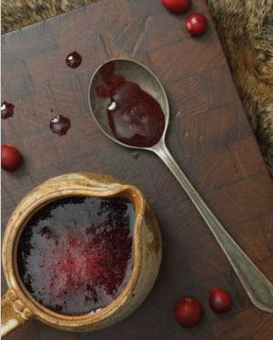

Snowberry Sauce Recipe

Today we will focus on learning the classic snowberry sauce, this is especially famous in the tamriel continent, the snowberry is one of the most common edible plants in northern skyrim.
with rich spices and a dash of warming port, this tart sauce pairs beautifully with a variety of meats as well as desserts.
Ingredients
- 12 ounces fresh or frozen cranberries, whole
- 1 cup water
- ½cup packed brown sugar
- ½ teaspoon Nord Spices
- 1 to 2 tablespoons port wine (optional)
Method
- Combine the cranberries, water, brown sugar, and Nord Spices in a medium pot over medium heat.
Bring up to a simmer and allow the sauce to cook until the cranberries are soft and bursting.
- Remove from the heat and mash the berries so you have a relatively even mixture.
At this point,you can simply add just enough port, if using to get a consistency you like, or press the mixture through a sieve for a much finer sauce.
Home